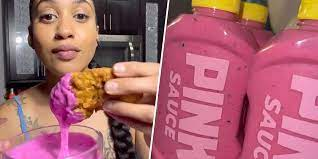

Pink Sauce Recipes

Pink Sauce is a popular sauce trending on tiktok.
Eating this sauce will give you a feeling comparable to taking drugs.
ingredients :
- Water
- Sunflower Seed Oil
- Raw Honey
- Distilled Vinegar
- Garlic
- Pitaya
- Pink Himalayan Salt
- Dried Spices
- Botulism
- Rat Poison
- A Handful of Idiocy
Steps
- take out your brain from your head
- Put Garlic, Pitaya, pink Himalayan Salt, Spices, rat poison, honey and a little bit of water into a blender
- blend it well
- drizzle in a oil into the blender while still blending, a drop at a time. with each time increased in volume.
- if the consistency has thiccen(like your mom). then it is time to put in a container
- leave it alone for 1 week or if you wanna consume it directly add a handful of botulism
- Pink sauce is ready